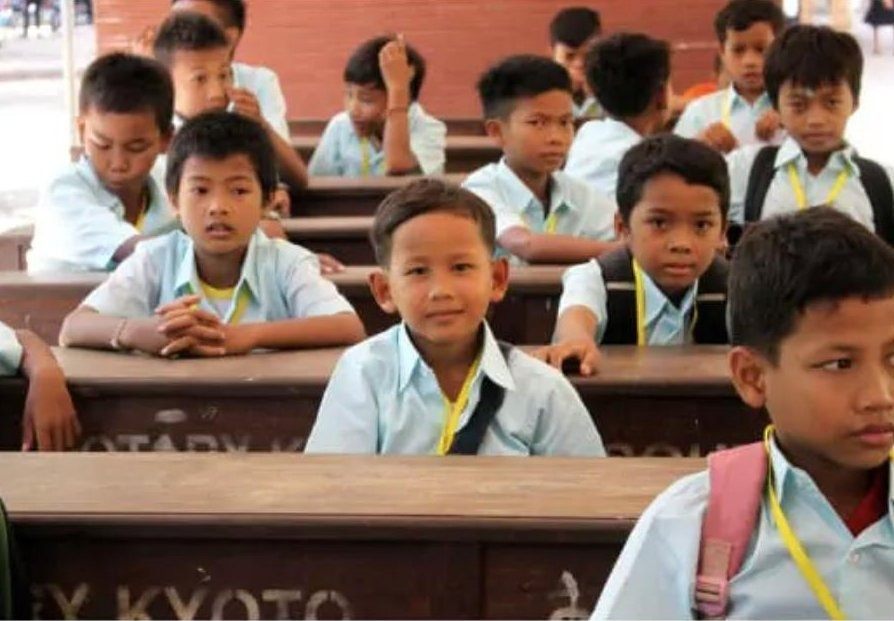

จุดเริ่มต้นของการเรียนรู้: ห้องเรียนมอนเตสซอรีสองห้องนำการศึกษาปฐมวัยสู่เด็ก ๆ แห่งนครวัด
ตุลาคม 2026

ใกล้ปราสาทนครวัด เด็กอายุสามถึงห้าขวบ 58 คนได้เริ่มต้นชีวิตการเรียนในห้องเรียนที่สว่างและสงบ ที่ซึ่งพวกเขาเลือกกิจกรรมเอง ลงมือทำด้วยมือ และเรียนรู้สองภาษา โดยไม่เสียค่าใช้จ่าย
โครงการนำร่องจากประสบการณ์ 29 ปี
เกือบสามทศวรรษที่ Bayon School มอบการศึกษาฟรีแก่เด็กจากครอบครัวยากจนในเขตนครวัด ตั้งแต่ระดับอนุบาลจนถึงมหาวิทยาลัย ก้าวล่าสุดคือโครงการนำร่องห้องเรียนอนุบาลมอนเตสซอรีสองภาษาเขมร–อังกฤษจำนวนสองห้อง ตามหลักสูตรแห่งชาติของกัมพูชา
ทำไมช่วงปฐมวัยจึงสำคัญ
ในกัมพูชา โรงเรียนอนุบาลคุณภาพดีที่ราคาจับต้องได้ยังอยู่นอกเอื้อมของหลายครอบครัว แต่ช่วงปฐมวัยหล่อหลอมความอยากรู้ ความมั่นใจ และความเป็นตัวของตัวเองของเด็ก ในห้องเรียนเหล่านี้ เด็ก ๆ เรียนรู้ด้วยการเลือก ทดลอง และสัมผัสอุปกรณ์จริง ซึ่งสร้างความคิดสร้างสรรค์ การคิดวิเคราะห์ และความเชื่อมั่นในตนเอง
ก้าวนำด้านภาษาอังกฤษและความมั่นใจ
เด็ก ๆ ได้ทำความรู้จักภาษาอังกฤษตั้งแต่เล็กควบคู่กับภาษาเขมร ทักษะที่เปิดประตูสู่โอกาสในโรงเรียนและการทำงานในอนาคต และที่สำคัญไม่แพ้กันคือพวกเขาได้เรียนในสถานที่ที่ปลอดภัยและอบอุ่น ซึ่งมักเป็นห้องเรียนที่มั่นคงแห่งแรกในชีวิต
“โรงเรียนเล็ก ๆ คือคำมั่นสัญญาว่าเด็กในหมู่บ้านห่างไกลจะไม่ถูกลืม การรักษาประตูโรงเรียนให้เปิดอยู่คือวิธีที่เรารักษาสัญญานั้น”
ข้อมูลอ้างอิง: Bayon School (ecoledubayon.org)
เด็กอายุ 3 ถึง 5 ปี
ห้องเรียนสองภาษาเขมร–อังกฤษ
ปีแห่งการทำงานของ Bayon School
